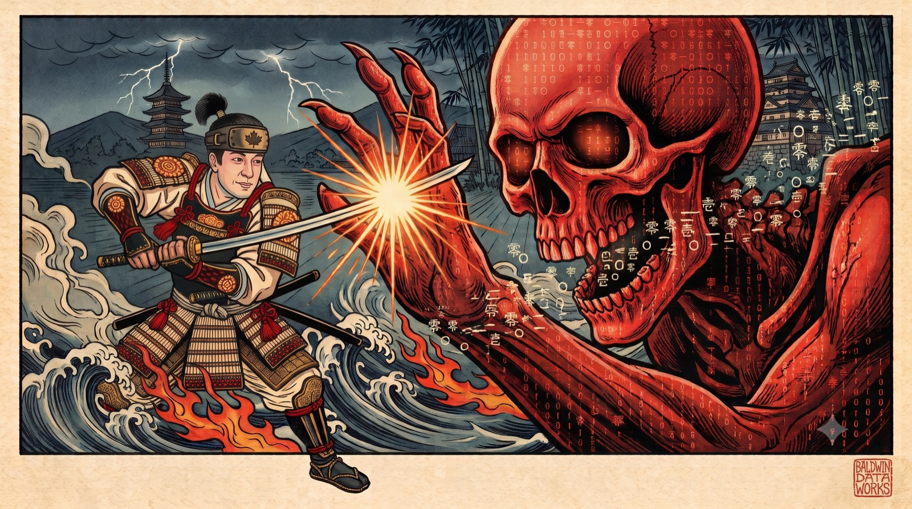

Bridging Enterprise Data with Agentic Intelligence
Core Services
Empowering organizations with next-generation agent architectures and data infrastructure.
Data Engineering & Integration
Designing high-throughput ETL/ELT pipelines, structured warehousing layers, and database migrations that establish a clean, production-ready data foundation.
Agentic AI Integration
Orchestrating autonomous workflows and multi-agent loops that run asynchronously to handle enterprise project planning, code synthesis, and analytics.
Cloud-Native Architecture
High-integrity serverless and containerized environments built on GCP and AWS. Engineered to manage ingestion pipelines, real-time telemetry, and microservices.

Data Security & Protection
With over 15 years defending enterprise data in production, security isn't bolted on after the fact — it's engineered in from day one. From IAM-hardened auth gateways to encrypted telemetry pipelines serving 40M+ active users, every dataset we touch is treated as a live threat surface, not just plumbing.
Our Philosophy
Systematizing complexity to unlock a future focused on human creativity and culture.
Extreme Systemization
We build systems to automate the routine, systematize the complex, and push operational efficiency to its limit. Code execution, cloud infrastructure, and data workflows should run autonomously without manual friction.
Intentional Engineering
We mandate a rigorous focus on the Why, What, and How of development. Every line of pipeline code, database query, and automation tool is designed to serve a clear product value, ensuring technical work aligns directly with enterprise business outcomes.
A Culture-First Future
We envision a society where logistics, administration, and routine labor are fully automated. By designing resilient systems today, we help build a world where humans are freed to participate exclusively in culture, philosophy, and creation.
Active R&D and Intellectual Property
Proprietary prototypes demonstrating our technical leadership in high-integrity software engineering.
Gomaae (胡麻和え)
A desktop project management platform structured around Japanese HOU REN SOU (reporting, communication, consultation) principles. Leverages custom Agentic AI workflows to streamline the SDLC and bridge teams with structured data layers.
- Tauri v2 (Rust)
- Next.js Standalone
- SQLite
- Anthropic Claude API
GalaSpo
A highly modular, microservices-based monorepo platform designed for live-streaming high-fidelity sports events. Utilizes a security gateway proxy, real-time metadata coordination, and camera-first mobile RTMP integration.
- React Native
- Docker & Nginx
- Auth Gateway (IAM)
- RTMP Streaming
TelegraTalk
A hands-free, voice-only Telegram client. Incoming messages are read aloud automatically and replies are captured by speech — the entire conversation controlled by a single click of a headset button.
- SwiftUI
- TDLibKit
- Speech Framework
- Apple Intelligence
Leadership & Track Record
Backed by 15+ years of software engineering, cloud architecture, and AI integration for global enterprises.
William Joe Baldwin
As the principal architect behind Baldwin Data Works, William leverages over 15 years of industry leadership transitioning complex legacy workloads to cloud environments, implementing data analytics frameworks for millions of active users, and deploying agentic platforms.
Principal Product Owner & AI Technical Lead
Jitera | Remote
Directed architecture and delivery of enterprise apps using advanced RAG frameworks and custom agentic tools. Standardized task workflows across Agile GCP deployments.
Lead Product Manager & Technical AI Lead
Rakuten | Tokyo, Japan
Managed 19-member engineering teams. Migrated telemetry systems for 40M active users to GCP/BigQuery. Built retailer analytics platforms.
Project Leader & Lead Data Scientist
Gruff Inc. (Consulting SoftBank, NTT Docomo, Nippon TV)
Managed big data pipelines and machine learning systems (predictive models, celeb facial recognition, TV platform analytics) across GCP/AWS.
Corporate Business Card
Interact with our executive business card. Hover to tilt in 3D, click to flip, or download a printable layout.
BALDWIN DATA WORKS INC.
Incorporation Number: BC1552899
Build with Us
Discuss C2C partnerships, scalable cloud-native architectures, or high-performance Agentic systems.